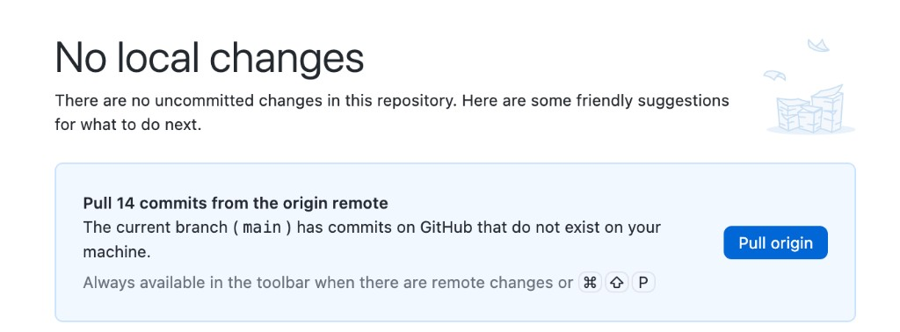
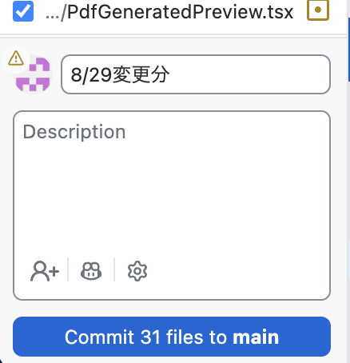
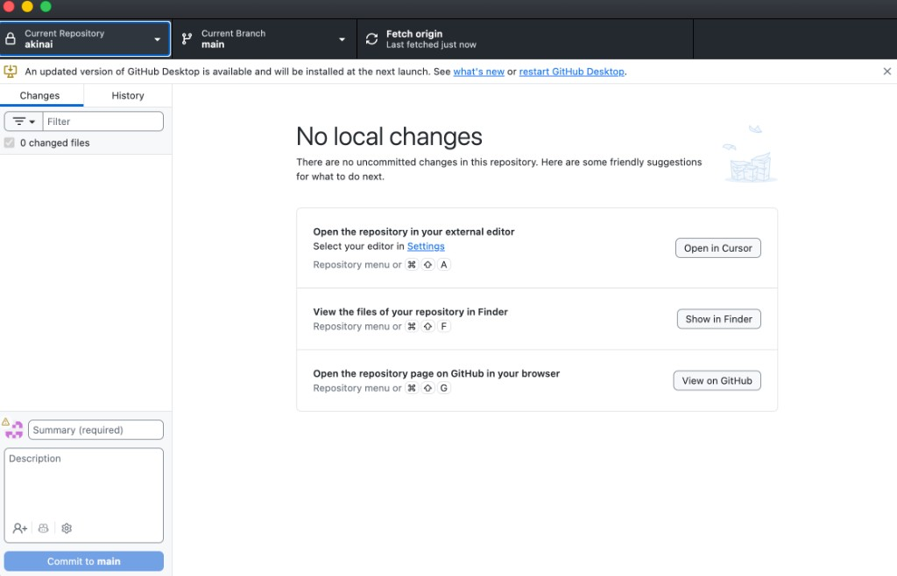
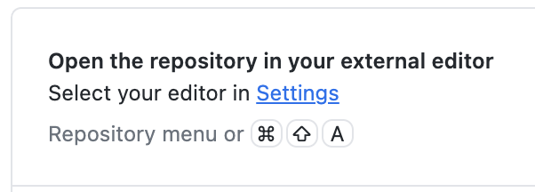
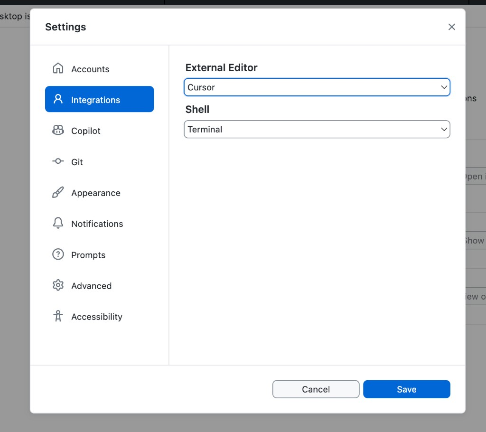

GitHub Desktop
Cursorで直した内容を、GitHubへ送るためのアプリです。変更履歴を管理する役割も持ちます。
3つの言葉だけ覚える
プル（pull）＝ クラウドから取る
他の人が送った変更を、自分のPCに取り込みます。作業を始める前に毎回やります。
- 画面に Pull origin が出たら押す
- 「GitHubにあるのに、自分のPCに無い」状態をなくす
- プッシュの前にも、もう一度確認する

コミット（commit）＝ 名前をつけて保存
「ここまでの変更に、こういう名前で区切りをつける」という操作です。まだ自分のPCの中だけの話です。
- 意味のあるまとまりで区切る
- 名前は「トップページの文言を修正」のように具体的に
- この区切りが、あとで戻すときの目印になる

順番は、プル → コミット → プッシュです。コミットだけしてプッシュを忘れると、PCが壊れたら消えます。プルを忘れると、他の人の変更と衝突します。
クローンしたあと、Cursorを開く
まだ自分のPCにファイルが無いときは、先に GitHubの画面でクローン します。緑の Code から Open with GitHub Desktop です。
クローンが終わると、GitHub Desktopに No local changes の画面が出ます。ここから Cursor を開くまでが、作業の入り口です。
- 真ん中の Open in Cursor を押す。
- Cursorが開いたら、左に案件のファイルが一覧される。ここから編集を始める。

先に、外部エディタをCursorにしておく
このボタンは、Settingsで選んだエディタの名前になります。最初に1回、外部エディタを Cursor にしておかないと、別のアプリが開きます。
- Select your editor in Settings を押す。または GitHub Desktop のメニューから Settings を開く。
- 左の Integrations を選ぶ。
- External editor を Cursor にする。
- Save を押す。


1回設定すれば、次からは Open in Cursor と出ます。ショートカットは ⌘ + Shift + A です。
作業の流れ
- 作業を始める前に Pull origin を押す。他の人の変更を自分のPCに取り込む。
- Cursorで直して保存する。
- GitHub Desktopを開く。左の Changes に、直したファイルが並ぶ。
- 送りたいファイルにチェックを入れる。
- 左下の Summary に、何をしたかを1行で書く。
- Commit to main を押す。まだ自分のPCの中だけ。
- Push origin を押す。これでクラウドへ送られる。
右上のボタンは、状況で名前が変わります。取るものがあるときは Pull origin、送るものがあるときは Push origin、どちらも無いときは Fetch origin です。プッシュの前に必ずプルです。順番を逆にすると、他の人の変更と衝突して、その場で解決を迫られます。
コミット名の書き方
| これだと後で困る | こう書く |
|---|---|
| update | トップページのお問い合わせ文言を修正 |
| 修正 | 04開発ページにツール一覧のリンクを追加 |
| いろいろ | スマホ表示でメニューが重なる不具合を修正 |
戻したいときに探すのは、この1行だけです。ここが雑だと、履歴が残っていても使えません。
困ったとき
| 起きたこと | どうするか |
|---|---|
| 変更が一覧に出てこない | Cursorで保存できているか確認する（⌘ + S） |
| Push が失敗する | 先に Pull origin をしてから、もう一度プッシュする |
| コンフリクト（衝突）と出た | 自分で判断せず、実装リードに連絡する。両方の変更を残すか選ぶ必要がある |
| 間違ったコミットを送った | 消さずに、正しい状態にした新しいコミットを送る。履歴は残してよい |
次に進む合図
- 作業前に Pull origin をした
- コミット名を読めば、何をしたか分かる
- Push origin まで押し、右上に未送信の表示が残っていない